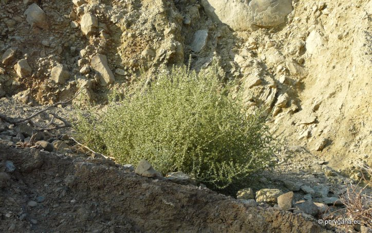
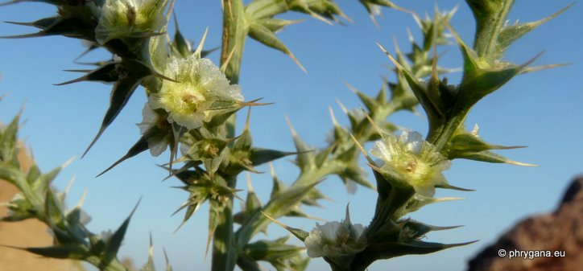
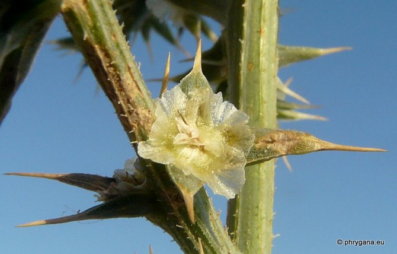
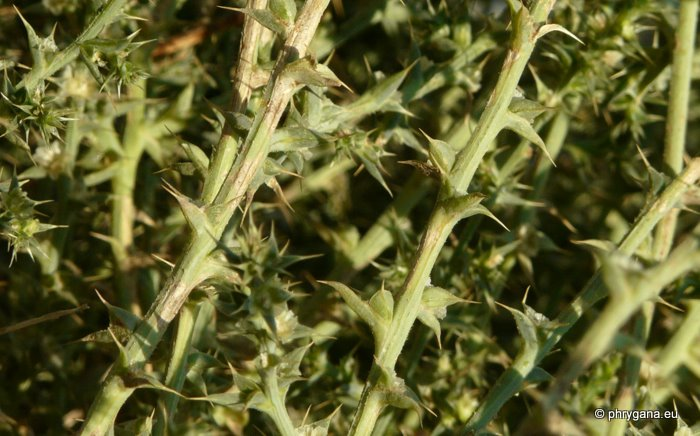
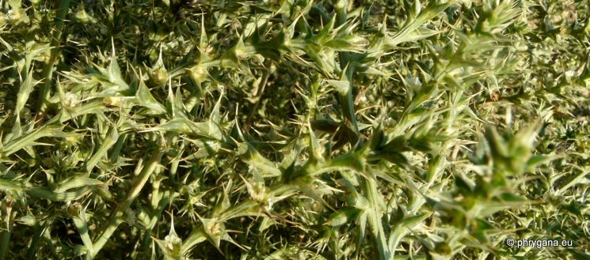

| PHRYGANA | Fauna | Flora | Galles | liste des espèces |
contact -
info - commentaires phrygana1 (at) gmail.com |
| Particularités crétoises | nouveautés | Mines | ressources naturelles |
| Salsola kali L. |
| 287 | Flora | AMARANTHACEAE (incl.Chenopodiaceae) | Salsoloideae | Salsola L. |
|
 Salsola kali Melambes (Agios Giorgos) 08 septembre 2011 |
| Prickly Saltwort -- la Soude -- Barilla pinchosa -- Salsola erba-kali -- Loogkruid -- Kali-Salzkraut -- Σαλσóλα το κάλι | |
| Syn.: Salsola tragus subsp. pontica | |
| Plante à poils courts et raides, un peu succulente, touffue | |
| Feuilles: alternes, charnues, linéaires-cylindriques avec une épine terminale, non dentées | |
| Tiges: couchées-ascendantes | |
| Fleurs: petites, vert pâle jaunâtre, solitaires à l'aisselle des bractées raides terminées par une épine; périanthe membraneux, à 5 segments; segments avec une veine médiane à peine marquée et un apex souple; bractéoles connées à la base, glabres | |
| Hauteur: 20 - 80 cm | Type biologique: thérophyte ramifié |
| Floraison: juin juillet août septembre | |
| Altitudes: 0 - 10 m | |
| Statut en Crète: indigène | |
| Biotopes en Crète: dunes littorales, plages de sable et de galets, bas des falaises littorales | |
| Distribution: région Méditerranéenne, région de la mer Noire | |
|
 Salsola kali Melambes (Agios Giorgos) 08 septembre 2011 |
|
 Salsola kali Melambes (Agios Giorgos) 08 septembre 2011 |
|
 Salsola kali Melambes (Agios Giorgos) 08 septembre 2011 |
|
 Salsola kali Melambes (Agios Giorgos) 08 septembre 2011 |
| 07 janvier 2013 |
| © paul fontaine -- © Phrygana.eu 2007 -- 2013 |